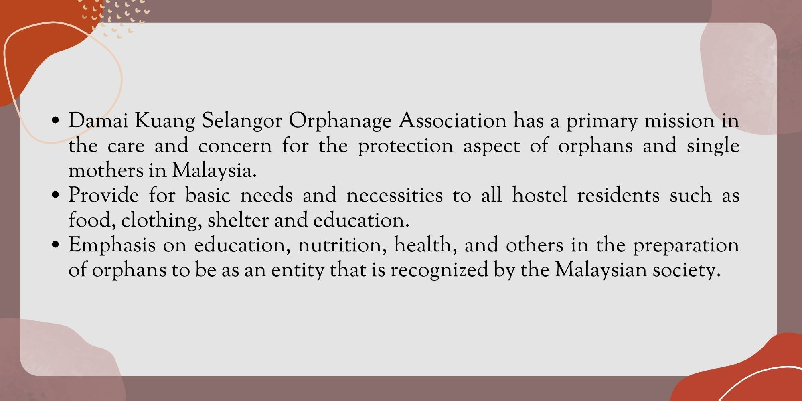

Establishment of Asrama Damai Kuang
The idea of establishing a shelter for orphans in Kuang, began in the middle of 1989. History starts when a father passes away, leaving nine young children to rely on him. After the incident, Tuan Haji Suhaimi Bin Dzajuli adopted the children for roughly eleven months. At that time, Tuan Haji Suhaimi Bin Dzajuli happened to be the Imam of the Al-Islahiyah mosque in Batu 17 ¾ Kuang. This is also known by the authority members of the Al-Islahiyah Mosque and each one of them feels that a better effort must be made for the benefit and welfare of these children in the future. So an agreement was created to establish an orphanage hostel in Kuang, which known as Asrama Damai Kuang till today.
Alhamdulillah, the aim become true when a servant of God donated 0.5 acres of land in Lorong Teratai, Kuang for the purpose of building the hostel. Bahagian Wakaf, Majlis Agama Islam Selangor (MAIS) was assigned to be the landowner. At the same time, Masjid Al-Islahiah Kuang also established a temporary committee to manage orphans in the country. The committee chaired by Tuan Haji Suhaimi has begun working to raise funds for the construction of a base building to house orphans. The financial support of individuals and businesses has helped the Committee build a row of houses for disadvantaged families.
The development of this center has attracted many people's attention when in 1991, a total of 74 orphans were placed in this center. Most of them are residents of the surrounding area and the State of Selangor. The laying of the foundation stone of Asrama Damai was made on Sunday, October 18, 1992 equivalent to 22 Rabiulakhir 1413 Hijrah by Y.B Dato `Abu Bakar bin Abdul Hamid, DSSA, SMS, PPK, PJK. He was then a member of the Assembly of the Selangor Parliament. Over time, the occupants of this hostel increased and the hostel's waqf land area also increased to 4.0 acres as waqf for Asrama Damai, Kuang.
Our Mission
